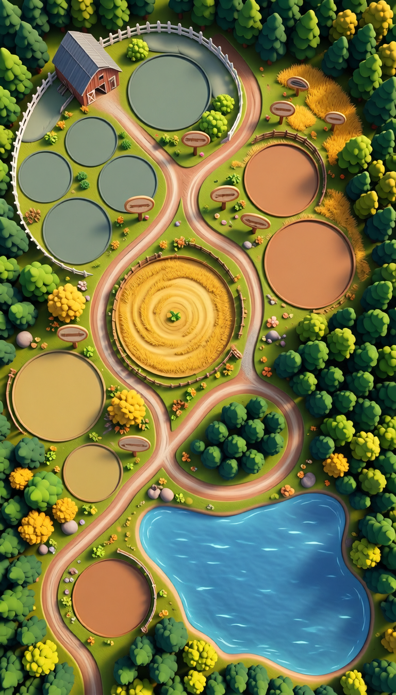
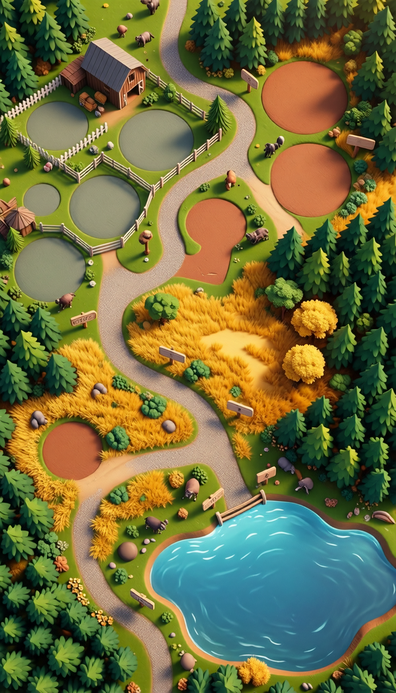

Bộ asset gốc của dự án · Bản đồ vườn thú + 27 icon loài thú
Style: Cartoon mascot (Lion làm chuẩn) · Palette ấm muted theo Art Bible
| Dự án | Animal World Zoo (ZooManament) — Unity 6.3 LTS, URP 2D |
| Công cụ tạo | Ludo AI (qua MCP server mcp__ludo) — createImage / generateWithStyle |
| Ngày tạo | 2026-06-10 |
| Định hướng nghệ thuật | Theo design/art/art-bible.md của dự án (palette, shape language, biome zones) |
| Style anchor | Icon Lion (request_id awz-animal-icons-anchor-cartoon) — các loài khác tạo bằng generateWithStyle để đồng bộ |
| Định dạng | PNG-32 (RGBA) — convert từ WebP gốc của Ludo bằng libwebp dwebp 1.4.0 |
| Số lượng | 2 bản đồ + 27 icon loài = 29 asset |
Tài liệu này lưu lại provenance (tool, ngày, request_id, định hướng) làm bằng chứng asset được tạo riêng cho dự án. Prompt gốc và request_id được lưu trong lịch sử phiên làm việc.

